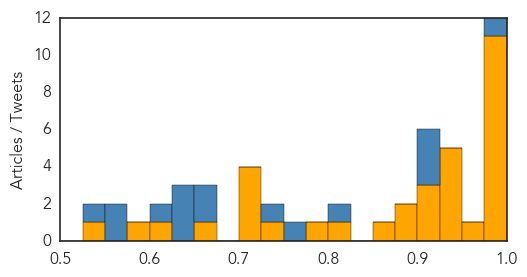
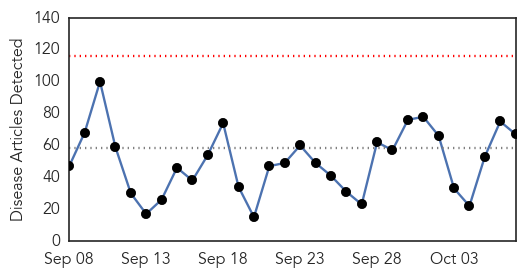
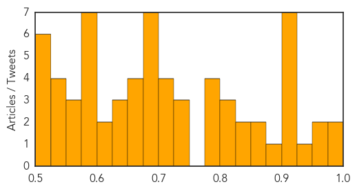

Ebola
30-Day Web Trend
0 alerts, 0 warnings

30-Day Twitter Trend
0 alerts, 0 warnings

Article Locations

Article Confidences
Top Articles:
- 1.000
- WHO hails first full week with no new Ebola cases since March 2014
- 1.000
- The Ebola epidemic might (might) be finally over
- 1.000
- Lecture reflects on legacy of the Ebola crisis
- 1.000
- Dallas Hospital Worker Diagnosed With Ebola, First to Catch Deadly Virus in U.S.
- 0.999
- Travelers Returning from West Africa Tested Negative for Ebola
- 0.999
- WHO hails first full week with no new Ebola cases since March 2014
- 0.992
- Dedicating Emergency Operations Centers in West Africa « Awoko Newspaper
- 0.987
- Family Who Came In Contact With Thomas Eric Duncan Is Being Relocated
- 0.980
- Malaria Deaths Declined, Ebola Threatening its Revival in West Africa
- 0.978
- Lessons Learned From Ebola Epidemic Discussed At San Diego Conference
- 0.975
- VSO Disseminates Research Findings Report of Impact on Ebola
- 0.961
- With the Ebola epidemic nearly over, Paul Farmer has ideas about how to prevent the next one
- 0.949
- Research Shows More Women Died During Ebola
- 0.947
- Haemorrhagic fever kills four in Central Darfur - Sudan
- 0.944
- Tekmira, Biocryst, Sarepta, NewLink, Inovio, NanoViricides Up In Premarket
- 0.941
- Liberia needs 40,000 Doctors
- 0.933
- Politico SL News Medical students call for training opportunities
- 0.910
- China to build 100 hospitals and clinics in Africa
- 0.907
- Chinese, African Health Ministers Affirm Commitment to Cape Town Declaration for Future Cooperation
- 0.905
- China-Africa health forum adopts Cape Town Declaration
- 0.898
- China-Africa health forum adopts Cape Town Declaration
- 0.887
- Ambassadors briefed on Africa’s health policy direction
- 0.854
- Chinese boost to Africa’s health services - Politics
- 0.816
- S/Leone: Ebola devastated maternal health
- 0.790
- Politico SL News China to deploy fourth Ebola vaccine trial in Sierra Leone
- 0.730
- China, Africa agree on building resilient public health system
- 0.719
- Ebola – Weep Not Mother
- 0.719
- ITU's big plans for Sierra Leone
- 0.715
- China, Africa agree on building resilient public health system
- 0.704
- CDC awards Emory $2.2 million grant to prevent spread of infectious diseases
- 0.654
- Ugandan on the “Africa is not Ebola” campaign
- 0.603
- Let's remain alert and refuse to become complacent
- 0.587
- Motsoaledi signs health deal with China
- 0.536
- MOHS Targets 1.5 Million Children
Top Tweets:
- 0.989
- Current assays detect Ebola virus in semen - Healio http://t.co/4zKVBKCw9Y ebola EVD
- 0.981
- FINALLY!!!!! No confirmed cases of Ebola virus disease (EVD) were reported in the week to 4 October!!!!! ZEROEBOLACASES
- 0.957
- Ebola diaries: Bringing help to those in desperate need - World Health Organization http://t.co/PBK6TnmQJy ebola EVD
- 0.929
- Ugandan on the “Africa is not Ebola” campaign - New Vision http://t.co/8IQeTV3f9m ebola EVD
- 0.904
- Baby and maternal deaths soar in Sierra Leone amid Ebola fears – researchers - The Guardian http://t.co/Xwyv5x4SiL ebola EVD
- 0.859
- Margaret put others first in Ebola fight - Edinburgh Evening News http://t.co/0jNDDoBh0O ebola EVD
- 0.855
- World Marks First Week of No New Ebola Cases - TIME http://t.co/6qoDzpFPWO ebola EVD
- 0.816
- Paul Allen gives another $11M to Ebola, epidemic preparedness - Puget Sound Business Journal (Seat... http://t.co/mLAdbJyAXh ebola EVD
- 0.788
- Lessons Learned From Ebola Epidemic Discussed At San Diego Conference - KPBS http://t.co/dwY7T0FXgX ebola EVD
- 0.785
- Statement on the 7th meeting of the IHR Emergency Committee regarding the Ebola outbreak in West Africa http://t.co/4C2se4JnNp
- 0.764
- No confirmed Ebola cases were reported in the week to 4 October. First time that a complete epi week has 0 confirmed cases since March 2014
- 0.749
- Momentous: For the 1st time since West Africa's Ebola outbreak started a week has passed without a case. greatnews http://t.co/hGVp0nalJT
- 0.710
- How a local peacebuilding network helped stop the spread of Ebola in Liberia http://t.co/1Z6geRr3II
- 0.701
- .@nytimes team produced important journalism during West Africa's Ebola outbreak. Hope to read an book. http://t.co/x0rgA1phSQ
- 0.690
- Federal Employees to Be Honored for Achievements in Fighting Cancer, Ebola and ... - G http://t.co/o6RLLc2m7d ebola EVD
- 0.683
- 'Living with my nightmares', fiancee of Ebola victim speaks - KTAL http://t.co/sBofyBZnGT ebola EVD
- 0.667
- Fiancée of Ebola Victim Reflects One Year Later - NBC 5 Dallas-Fort Worth http://t.co/lHHzvd1F2X ebola EVD
- 0.667
- Fiancée of Ebola Victim Reflects One Year Later - NBC 5 Dallas-Fort Worth http://t.co/3XKEr7kpoT ebola EVD
- 0.642
- RT: SierraLeone reported no confirmed Ebola cases for three consecutive weeks. The last positive case was discharged on 2…
- 0.619
- SierraLeone. Exploring the impact of the Ebola outbreak on routine maternalhealth services @VSO_Intl http://t.co/duATkONlGe
- 0.596
- Ebola Viral Infections – Pipeline Review, H1 2015 by ReportBazzar. - http://t.co/758tMXPgAh (blog) http://t.co/mn3b8DQjeH ebola EVD
- 0.560
- Week ending 10/4 marks first complete epi week w. zero confirmed Ebola cases in W. Africa since March 2014. http://t.co/hSIc9fowBZ
- 0.552
- RT: Ebola Wonderful news! Praying and holding thumbs for everyone in Guinea, Sierra Leone and Liberia https://t.co/pY3klypYjV
- 0.540
- What happened to Liberia's Ebola orphans? - http://t.co/iHBGIUu0Mk http://t.co/1zBlBf7N3I ebola EVD
- 0.526
- RT: Week ending 10/4 marks first complete epi week w. zero confirmed Ebola cases in W. Africa since March 2014. http://t.co/…
- 0.526
- RT: Week ending 10/4 marks first complete epi week w. zero confirmed Ebola cases in W. Africa since March 2014. http://t.co/…
Unknown
30-Day Web Trend
0 alerts, 0 warnings

30-Day Twitter Trend
2 alerts, 0 warnings

Article Locations

Article Confidences
Top Articles:
- 0.998
- Getah Virus: Significance as an Equine Pathogen
- 0.995
- Brighton and Hove News Hundreds of young Brighton and Hove schoolchildren offered flu spray at school
- 0.970
- Increase In Reported Cases Of Hand Foot And Mouth Disease
- 0.956
- Annual flu jab campaign
- 0.947
- Health Ministry to continue monitoring schools affected by hand, foot and mouth disease
- 0.922
- Get free flu shots at health department on Friday
- 0.919
- Flu season has arrived in northern Nevada
- 0.917
- Chicago Tribune
- 0.917
- Chicago Tribune
- 0.917
- Chicago Tribune
- 0.917
- Chicago Tribune
- 0.916
- Tackle the flu via drive-thru immunization clinic
- 0.878
- Doctors debate diagnosis of Lyme disease
- 0.857
- Drive to eliminate rabies
- 0.852
- FMD outbreak in Zimbabwe: Botswana on high alert
- 0.849
- Malawi govt given ultimatum to employ 51 recently graduated doctors
- 0.832
- Doctors warn not to wait to get flu shot this year
- 0.821
- Second child sickened by E. coli after Oxford fair visit improves — Health — Bangor Daily News — BDN Maine
- 0.814
- Woman dies of rabies; bat bite blamed for fatality
- 0.804
- Monkey bite increase sparks rabies warning
- 0.791
- Moko threatens Suriname bananas
- 0.790
- Kansas City Seeing An Outbreak Of Diarrhea-Causing Disease
- 0.787
- Eau Claire City-County Health Department holds flu shot clinics
- 0.776
- TB cases were contracted overseas, officials believe
- 0.743
- Wyoming marks first known rabies fatality with death of woman, 77
- 0.730
- Russian incursion into Turkish air space deliberate, NATO says
- 0.728
- We must reduce infant mortality rates
- 0.707
- Israel's Netanyahu cancels Germany trip amid ongoing violence
- 0.705
- Syrian regime launches ground assault backed by Russian air strikes, monitor says
- 0.702
- Russian warships fire cruise missiles into Syria
- 0.702
- Hungarian photographer under fire over ‘migrant chic’ fashion shoot
- 0.699
- Bluetongue disease killing deer in the Northwest;
- 0.696
- Haze makes over 300,000 Indonesians get sick
- 0.693
- Obama calls MSF chief to apologize for Kunduz hospital strike
- 0.692
- Local schools line up for flu vaccinations « Tooele Transcript Bulletin – News in Tooele, Utah
- 0.682
- Campaign art: Fighting neglected tropical diseases one step at a time
- 0.681
- Case of Mad Cow Disease confirmed in Carmarthenshire
- 0.680
- Health concerns over rise in holiday monkey bites
- 0.674
- Chicken and campy: Foodnet Canada 2011-2012
- 0.661
- Feature: Ugandans hail Chinese anti-malarial drug
- 0.661
- Woman at LCC scratched by rabies-infected bat, Lane County health officials report
- 0.656
- Health officials to attend International Summit on Tuberculosis and Diabetes in Bali, Indonesia
- 0.640
- Travel advisory for Chinese province raised after new H7N9 case
- 0.636
- Concern after deadly tree disease discovered in Tayside
- 0.636
- TB Cases Were Contracted Overseas, Officials Believe
- 0.624
- Mathura’s health service in a shambles
- 0.602
- Haj pilgrim may have MERS symptoms
- 0.597
- More Than 730 Illnesses Reported in Latest Salmonella Outbreak
- 0.595
- Fourth Person Dies in Cucumber Salmonella Outbreak
- 0.582
- Kenya enhances malaria response in the wake of El-Nino rains
Showing top 50 articles...
Top Tweets:
- 0.834
- RT: A ver mujeres, el príncipe azul y esas cosas de Disney no existe, si pierdes un zapato en la noche no eres una princesa, s…
- 0.684
- RT: Hoy piensa en ti, en tu vida en lo que has hecho y lo que pretendes hacer de ella, no gastes energías en lo que no vale…
- 0.643
- : Patients with flu-associated pneumonia less likely to have received flu vaccine. Learn more: http://t.co/3tckfnpx3h
- 0.637
- RT: Noticias que quisiéramos leer en Twitter: Inflación venezolana fue de 000,1% y ridiculiza a la de Noruega que alcanzó el …
- 0.623
- People with certain health conditions are at higher risk this flu season. Take steps to prevent flu. http://t.co/K3WOhljHDl
- 0.547
- Tema de Tesis: implicaciones psico-físicas de los apagones de 3 hrs en los venezolanos sinluz
- 0.506
- RT: “Me convertí en un loco con intervalos de horrible cordura.” Edgar Allan Poe Hace 166 años que nos dejo un genio http://t…